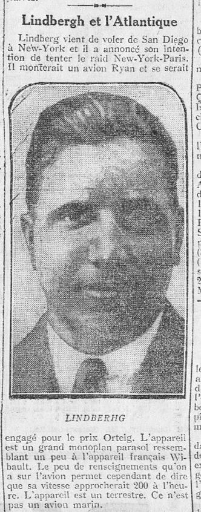
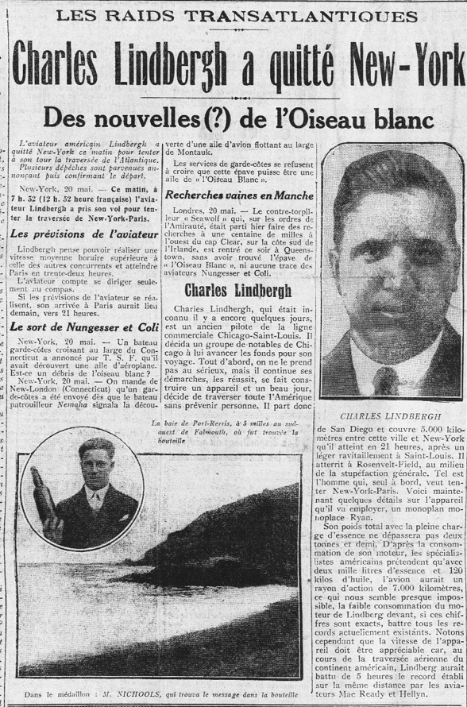
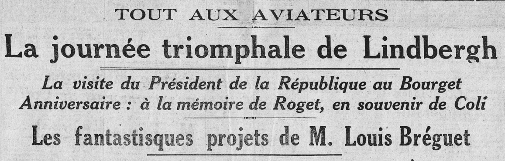
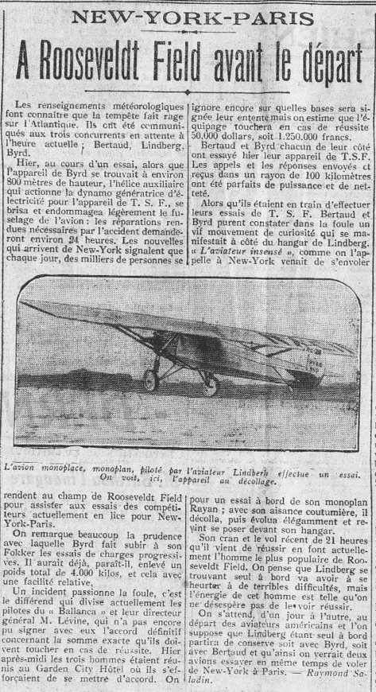
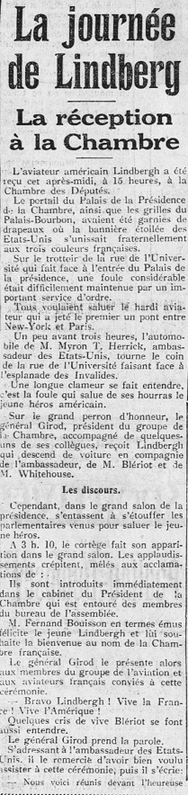
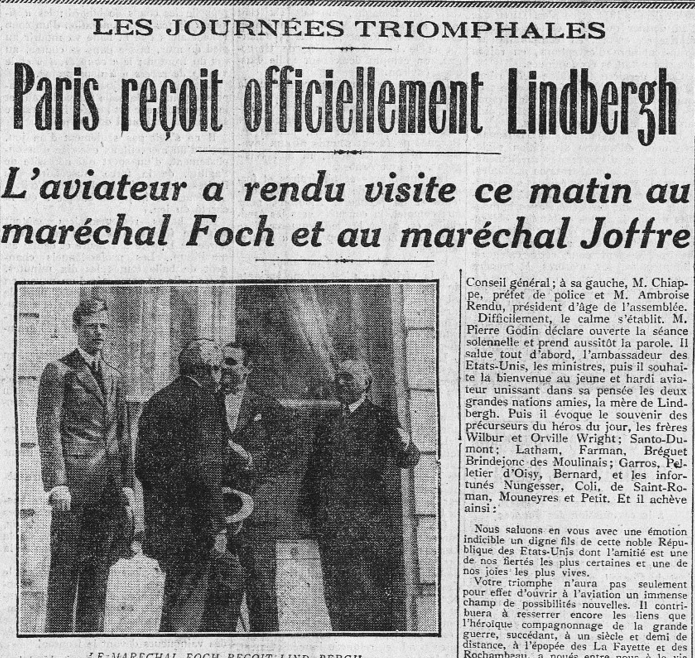
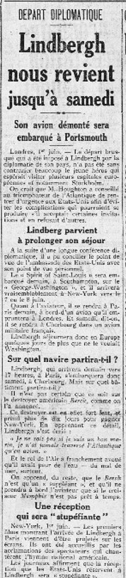

14/05/1927
13-17/05/1927


21-22/05/1927

24/05-09/06/1927





En deux mots, la narratologie...
Etude de la narration, analyse des formes et des formats narratifs
Autrement
dit :
Comment on raconte ce qu’on raconte ?
Comment fait-on d’une histoire un récit ?
Et comment fait-on d’une histoire un bon récit ?
(et qu’est-ce qu’un bon récit ?)
Distinctions conceptuelles fondamentales
Et en quoi cela concerne aussi le récit médiatique ?
L'intrigue
Présente quand il y a une tension narrative
- Suspens
- Curiosité
- Surprise
L'histoire
(re)Construction mentale exhaustive de ce qu’il s’est passé.
Attention, ce n’est pas l’enchainement causal réel, c’est bien une reconstruction, ou une construction
Le récit
Manifestation de l’histoire, matériau (ici, soyez terre-à-terre !), ce qui est écrit, filmé, peint…
Ces distinctions sont présentes dès lors que l’on raconte quelque chose, elles jouent donc à plein dans le régime médiatique
L'hétérochronie à récit condensé